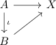
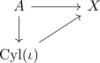

triangle commuting up to homotopy and mapping cylinder
Proposition
Let

be a triangle commuting up to a specified homotopy $H: A \times [0,1] \rightarrow X$
then this corresponds to a strictly commuting diagram

Proof
special case of